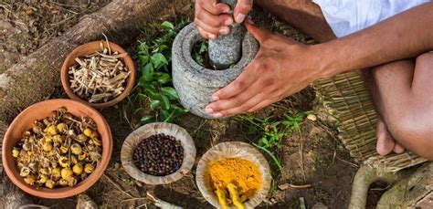

PROPUESTA
Tema: Medicina tradicional en México
La medicina tradicional es un tema complicado en México. Se habla mucho de la herencia ancestral, de la importancia de preservar nuestra cultura y de cuidar nuestro cuerpo de manera natural, con remedios, brevajes y pociones que han sobrevivido generación tras generación. Sin embargo, hoy se exotiza a los que se dedican profesionalmente a curar con plantas medicinales, a los que no ceden ante los avances científicos y farmacéuticas . Los curanderos, parteras, sobadores, hueseros, entre otros, son reconocidos por el Estado, aunque únicamente como médicos que apaciguan los problemas de salud en sus propias comunidades. La Ley de Salud no los cobija y su trabajo no se legitimiza.
En México se tien registro de 144 médicos tradicionales, una cifra que no termina de representar a todos los que se dedican a esto, puesto que siguen siendo identificados como brujos o hechiceros.
Elegí este tema porque me parece interesante darle difusión a la situación actual de esta rama de la medicina. Igualmente incorporaré información sobre la herbolaria en nuestro país, sus regulaciones y algunas de sus fallas, ya que es un asunto que va de la mano con el tema principal del reportaje.
Este reportaje tiene como propósito hacer visibles datos importantes sobre la medicina tradicional en el México contemporáneo, sin dejar de lado su historia. Por lo anterior, pretendo incorporar material visual que acompañarán la nota, por ejemplo una línea del tiempo para ilustrar su evolución y explicar su origen, gráficos representando las cifras de registro actuales, y mapas que muestren datos importantes como datos de los médicos tradicionales (sus comunidades de origen, por ejemplo).
Para llevar el reportaje a cabo utilizaré herramientas vistas en clase (datawrapper, tableu, knightlab y libre office), igualmente incluiré una entrevista que soporte la información presentada.
El texto tendrá una extensión de 2000 caracteres.